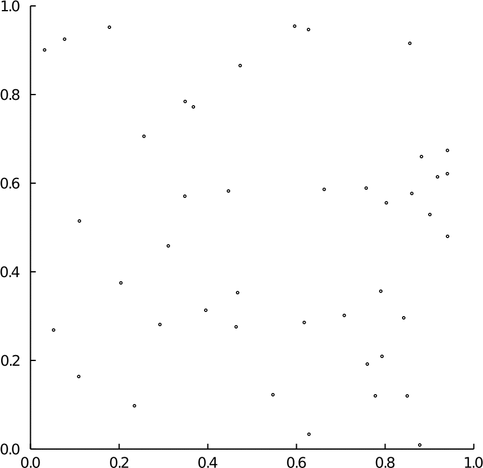
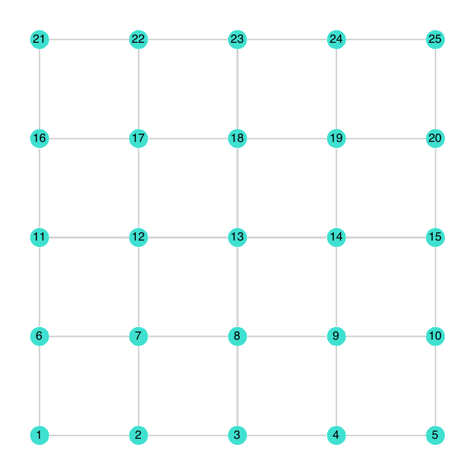
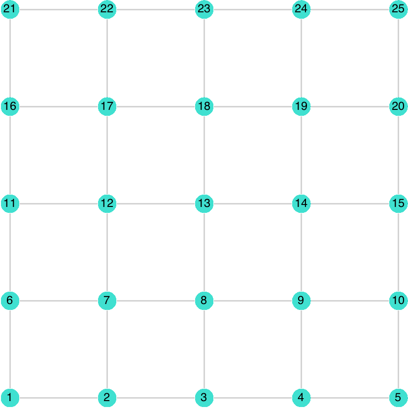

Sampling methods
Below is the list of point processes which can be sampled exactly using PartialRejectionSampling.jl
- Spatial point processes
- Graph point processes
- Miscellaneous
Default exact sampler
PartialRejectionSampling.generate_sample — Functiongenerate_sample(
pp::HomogeneousPoissonPointProcess{Vector{T}};
win::Union{Nothing,AbstractWindow}=nothing,
rng=-1
)::Matrix{T} where {T<:Float64}Generate an exact sample from PRS.HomogeneousPoissonPointProcess on window win. Sampled points are stored as columns of the output matrix.
Default window (win=nothing) is window(pp).
generate_sample(
pp::HardCorePointProcess{T}
win::Union{Nothing,AbstractWindow}=nothing,
rng=-1
)::Vector{T} where {T}Generate an exact sample from the PRS.HardCorePointProcess.
Default window (win=nothing) is window(pp)=pp.window.
Default sampler is PRS.generate_sample_prs.
See also
generate_sample(
pp::StraussPointProcess{T};
win::Union{Nothing,AbstractWindow}=nothing,
rng=-1
)::Vector{T} where {T}Genererate an exact sample from PRS.StraussPointProcess.
Default window (win=nothing) is window(pp)=pp.window.
Default sampler is PRS.generate_sample_dcftp.
See also
generate_sample(
pp::Ising{T},
idx::T;
rng=-1
)::T where {T<:Int}Generate an exact sample from the marginal distribution of state $i=$ idx of pp.
More specifically,
\[ x_i \sim \operatorname{Bernoulli}_{-1, 1} (\sigma(h_i)),\]
where $\sigma$ denotes the sigmoid function.
generate_sample(
pp::Ising;
win::GraphNode,
rng=-1
)Generate an exact sample from the marginal distribution of pp at state indexed by win.idx.
generate_sample(
pp::HardCoreGraph{T};
rng=-1
)::Vector{T} where {T}Generate an exact sample from the PRS.SinkFreeGraph.
Default sampler is PRS.generate_sample_prs.
generate_sample(
pp::RootedSpanningForest{T};
rng=-1
)Generate an exact sample from the PRS.RootedSpanningForest.
Default sampler is PRS.generate_sample_prs.
generate_sample(
pp::SinkFreeGraph;
rng=-1
)Generate an exact sample from the PRS.SinkFreeGraph.
Default sampler is PRS.generate_sample_prs.
generate_sample(
pfs::PatternFreeString{T},
size::Int;
rng=-1
)::T where {T<:String}Generate a string uniformly at random among all strings made of characters from pfs.alphabet with no occurence of the pattern pfs.pattern.
Default sampler is PRS.generate_sample_prs.
Partial Rejection Sampling (PRS)
Heng Guo , Mark Jerrum , Jingcheng Liu (2019) developed the PRS methodology to generate exact samples from product distributions of the form $\otimes_{n=1}^{N} \mu_n$ subject to some constraints. It requires access to an exact sampler for each $\mu_n$ and an oracle to check the violation of the constraints.
Given an initial sample from $\otimes_{n=1}^{N} \mu_n$:
- Vanilla rejection sampling resample all variables if any constraint is violated; until all constraints are satisfied,
- Partial rejection sampling instead constructs a subset of variables to be resampled, starting from variables involved in violated constraints, and preserves the state of the variables outside of this resampling set; until all constraints are satisfied.
In both cases, the output sample is guaranteed to have the right distribution, i.e., the product distribution subject to the prescribed constraints.
PartialRejectionSampling.generate_sample_prs — Functiongenerate_sample_prs(
pp::HardCorePointProcess{T}
win::Union{Nothing,AbstractWindow}=nothing,
rng=-1
)::Vector{T} where {T}Sample from PRS.HardCorePointProcess using Partial Rejection Sampling (PRS) of Heng Guo , Mark Jerrum (2018).
Default window (win=nothing) is window(pp)=pp.window.
See also
Example
A illustration of the procedure for $\beta=38$ and $r=0.1$ on $[0, 1]^2$ where points are marked with a circle of radius $r/2$.

generate_sample_prs(
pp::StraussPointProcess{T};
win::Union{Nothing,AbstractWindow}=nothing,
rng=-1
)::Vector{T} where {T}Genererate an exact sample from PRS.StraussPointProcess using Partial Rejection Sampling (PRS).
Default window (win=nothing) is window(pp)=pp.window.
Default sampler is PRS.generate_sample_grid_prs.
generate_sample_prs(pp::Ising; rng=-1)Generate an exact sample form pp using Partial Rejection Sampling (PRS), see Section 4.2 of Heng Guo , Mark Jerrum , Jingcheng Liu (2019).
Default sampler is PRS.generate_sample_grid_prs.
See also
generate_sample_prs(
pp::HardCoreGraph{T};
rng=-1
)::Vector{T} where {T}Sample from PRS.HardCoreGraph using Partial Rejection Sampling (PRS), see Section 7.2 of Heng Guo , Mark Jerrum , Jingcheng Liu (2019)
See also
- Example 4.1 of MoKr20.
Example
An illustration of the procedure on a $5\times 5$ grid graph.
- red: variables involved in constraints violation (gray neighboring nodes)
- orange: variables to be resampled (red nodes and their neighborhood)

generate_sample_prs(
pp::RootedSpanningForest{T};
rng=-1
)::T where {T<:LG.SimpleDiGraph{Int64}}Generate a rooted spanning forest of pp.graph, uniformly at random among all rooted spanning forests rooted at pp.roots, using Partial Rejection Sampling (PRS), see Section 4.2 of Heng Guo , Mark Jerrum , Jingcheng Liu (2019).
Example
An illustration of the procedure on a $5\times 5$ grid graph, with roots=[13]
- red: variables involved in constraints violation (edges forming a cycle)
- orange: variables resampled (edges originating from a red/orange node)

generate_sample_prs(
pp::SinkFreeGraph{T};
rng=-1
)::T where {T}Generate an orientated version of pp.graph uniformly at random among all possible orientations conditioned on the absence of sinks, using Partial Rejection Sampling (PRS).
See also
- Section 4.1 of Heng Guo , Mark Jerrum , Jingcheng Liu (2019).
Example
A illustration of the procedure on a $5 \times 5$ grid grah.
- red: variables involved in constraints violation (orientation of the edges pointing to a sink node)
- orange: variables resampled (orientation of the previous edges)

generate_sample_prs(
pfs::PatternFreeString{T},
size::Int;
rng=-1
)::T where {T<:String}Generate a string uniformly at random among all strings made of characters from pfs.alphabet with no occurence of the pattern pfs.pattern, using a tailored version of Partial Rejection Sampling (PRS) derived by Juan Gil , Joshua Amaniampong , Jake Wellens (2018).
using PartialRejectionSampling
pfs = PRS.PatternFreeString(["A", "C", "G", "T"], "ATGTA")
PRS.generate_sample_prs(pfs, 20; rng=1)
# output
"TCCAAATCTCCCCTGTCTAT"Grid Partial Rejection Sampling (grid PRS)
Sarat B. Moka , Dirk P. Kroese (2020) adapted the idea of Partial Rejection Sampling (PRS) (originally derived in the finite setting) to generate exact samples from Spatial point processes with finite range of interaction, noted $r > 0$.
The name of the method grid PRS results from the combination of the Partial Rejection Sampling (PRS) methodology with a partitioning of the domain of $\mathbb{R}^2$ where the target PRS.AbstractSpatialPointProcess – is divided into $N$ cells of type PRS.SpatialCellGridPRS with size $r \times r$,
To draw the correspondence with framework of PRS developed by Heng Guo , Mark Jerrum , Jingcheng Liu (2019), $\mu_n$ represents the target PRS.AbstractSpatialPointProcess restricted to the $n$-th cell, i.e., variables are point configurations.
Note that the grid PRS methodology requires an efficient sampling algorithm to generate exact samples on each cell involved in the partitioning of original domain, see, e.g., PRS.generate_sample_dcftp and PRS.generate_sample_prs.
See also closely related variants of grid PRS for
- Spatial point processes
- Graphical models
PartialRejectionSampling.AbstractCellGridPRS — TypeAbstractCellGridPRSAbstract type describing a cell used Grid Partial Rejection Sampling of Sarat B. Moka , Dirk P. Kroese (2020).
PartialRejectionSampling.GraphCellGridPRS — TypeGraphCellGridPRS{T} <: AbstractCellGridPRSMutable struct describing a graph node with fields
windowof typePRS.GraphNode{T}valueof typeT
PartialRejectionSampling.SpatialCellGridPRS — TypeSpatialCellGridPRS{T<:Vector{Float64}} <: AbstractCellGridPRSMutable struct describing a spatial cell with fields
windowof typeUnion{PRS.RectangleWindow,PRS.RectangleWindow}valueof typeVector{T}
Base.isempty — MethodBase.isempty(cell::SpatialCellGridPRS) = isempty(cell.value)Base.iterate — FunctionBase.iterate(cell::AbstractCellGridPRS, state=1) = iterate(cell.value, state)PartialRejectionSampling.dimension — Methoddimension(cell::AbstractCellGridPRS) = dimension(window(cell))PartialRejectionSampling.find_bad_cells_indices! — Methodfind_bad_cells_indices!(
g::SWG.SimpleWeightedGraph{T,U},
cells::Vector{V},
pp::AbstractPointProcess;
rng=-1
)::Set{T} where {T,U,V<:AbstractCellGridPRS}Identify bad events and return the corresponding cells' index. An event $\{i,j\}$ is said to be "bad"
\[ \left\{U_{ij} > \exp \left[ -\sum_{x \in C_i} \sum_{y \in C_j} V(x,y) \right] \right\}\]
where $U_{ij}$ is the weight of the edge $\{i,j\}$ in the interaction graph $g$ created by PRS.weighted_interaction_graph and $V$ the Gibbs potential discribing the pairwise Gibbs interaction of pp
Note when a bad event occurs, the corresponding $U_{ij}$ is resampled hence the "!"
This is a subroutine of PRS.generate_sample_grid_prs.
PartialRejectionSampling.find_cells_to_resample_indices! — Methodfind_cells_to_resample_indices!(
g::SWG.SimpleWeightedGraph{T,U},
cells::Vector{V},
pp::AbstractPointProcess;
rng=-1
)::Set{T} where {T,U,V<:AbstractCellGridPRS}Identify the set of events to be resampled as constructed by Algorithm 5 in Heng Guo , Mark Jerrum , Jingcheng Liu (2019) as part of the Partial Rejection Sampling (PRS) method. Return the indices of the variables (here cells) involved in the corresponding events.
This function is used as a subroutine of the grid PRS methodology of Sarat B. Moka , Dirk P. Kroese (2020), see PRS.generate_sample_grid_prs.
Note if the event associated to the edge $\{i,j\}$ of g is selected to be resampled, the uniform random variable encoded as the weight of the correspond edge is resampled (hence the "!")
This is a subroutine of PRS.generate_sample_grid_prs.
PartialRejectionSampling.generate_sample! — Methodgenerate_sample!(
cell::AbstractCellGridPRS,
pp::AbstractPointProcess;
rng=-1
)Generate an exact sample of pp in cell.window and save it in cell.value
PartialRejectionSampling.generate_sample! — Methodgenerate_sample!(
cells::Vector{T},
indices,
pp::AbstractPointProcess;
rng=-1
) where {T<:AbstractCellGridPRS}Apply PRS.generate_sample! to each cell of cells indexed by indices.
PartialRejectionSampling.generate_sample — Methodgenerate_sample(
pp::Ising;
win::GraphNode,
rng=-1
)Generate an exact sample from the marginal distribution of pp at state indexed by win.idx.
PartialRejectionSampling.generate_sample_grid_prs — Methodgenerate_sample_grid_prs(
pp::AbstractPointProcess{T};
rng=-1
)::Vector{T} where {T}Generate an exact sample from pp using grid Partial Rejection Sampling (grid PRS) of Sarat B. Moka , Dirk P. Kroese (2020).
PartialRejectionSampling.gibbs_interaction — Functiongibbs_interaction(
pp::AbstractPointProcess{T},
cell1::AbstractCellGridPRS{T},
cell2::AbstractCellGridPRS{T}
)::Real where {T}Compute the pairwise Gibbs interaction pp between $C_1$=cell1 and $C_2$=cell2.
This is a subroutine of PRS.generate_sample_grid_prs.
PartialRejectionSampling.gibbs_interaction — Methodgibbs_interaction(
ising::Ising{T},
xᵢ::GraphCellGridPRS{T},
xⱼ::GraphCellGridPRS{T}
)::Real where {T}Compute the Gibbs interaction of PRS.Ising
\[ \exp(J x_i x_j - |J|)).\]
Note the Gibbs interaction is normalized in be in [0, 1] to fit the framework of Sarat B. Moka , Dirk P. Kroese (2020) and Weiming Feng , Nisheeth K. Vishnoi , Yitong Yin (2019).
PartialRejectionSampling.initialize_cells — Methodinitialize_cells(
spp::AbstractSpatialPointProcess{T},
)::Vector{SpatialCellGridPRS{T}} where {T}The spp.window (PRS.RectangleWindow or PRS.SquareWindow) is divided into PRS.SpatialCellGridPRS of length the interaction range pp.r following the construction of Sarat B. Moka , Dirk P. Kroese (2020) in their grid Partial Rejection Sampling (grid PRS) methodology.
This is a subroutine of PRS.generate_sample_grid_prs.
PartialRejectionSampling.initialize_cells — Methodinitialize_cells(
ising::Ising{T}
)::Vector{GraphCellGridPRS{T}} where {T}Each node of ising.graph is considered as a cell of type PRS.GraphCellGridPRS such that cell.window is a PRS.GraphNode and cell.value initialized to zero(T).
This is a subroutine of PRS.generate_sample_grid_prs.
PartialRejectionSampling.is_inner_interaction_possible — Methodis_inner_interaction_possible(
spp::AbstractSpatialPointProcess,
cell_i::SpatialCellGridPRS,
cell_j::SpatialCellGridPRS
) = falseAssume cell_i and cell_j are neighboring cells in the weighted interaction graph constructed by PRS.weighted_interaction_graph from spp and already identified in the set of variables to be resampled in PRS.generate_sample_grid_prs Since the configuration of points in the corresponding cells and the uniform random variable associated to the event \{i,j\} are considered fixed, there is no degree of freedom to make the interaction between cell_i and cell_j possible.
This is a subroutine of PRS.generate_sample_grid_prs.
PartialRejectionSampling.is_inner_interaction_possible — Methodis_inner_interaction_possible(
ising::Ising{T},
xᵢ::GraphCellGridPRS{T},
xⱼ::GraphCellGridPRS{T}
) = trueAssume xᵢ and xⱼ are neighboring sites in the weighted interaction graph constructed by PRS.weighted_interaction_graph from ising.graph and already identified in the set of variables to be resampled PRS.generate_sample_grid_prs. Given the states of xᵢ and xⱼ, check whether a new assigment of $U_{ij}$ (the weight of edge $\{i,j\}$) can induce the bad event
\[ U_{ij} > \exp(J x_i x_j - |J|))\]
This is a subroutine of PRS.generate_sample_grid_prs.
PartialRejectionSampling.is_outer_interaction_possible — Methodis_outer_interaction_possible(
spp::AbstractSpatialPointProcess,
cell_i::SpatialCellGridPRS,
cell_j::SpatialCellGridPRS
)::BoolAssume cell_i and cell_j are neighboring cells in the weighted interaction graph constructed by PRS.weighted_interaction_graph from spp. Given the configuration of points in cell_i, check whether a realization of spp in cell_j can induce a bad event.
This is a subroutine of PRS.generate_sample_grid_prs.
PartialRejectionSampling.is_outer_interaction_possible — Methodis_outer_interaction_possible(
ising::Ising{T},
xᵢ::GraphCellGridPRS{T},
xⱼ::GraphCellGridPRS{T}
) = trueAssume xᵢ and xⱼ are neighboring sites in the weighted interaction graph constructed by PRS.weighted_interaction_graph from ising.graph. Given the state of xᵢ, one can always find a new assigment of xⱼ and/or $U_{ij}$ (the weight of edge $\{i,j\}$) can induce the bad event
\[ U_{ij} > \exp(J x_i x_j - |J|))\]
This is a subroutine of PRS.generate_sample_grid_prs.
PartialRejectionSampling.weighted_interaction_graph — Methodweighted_interaction_graph(
pp::AbstractSpatialPointProcess;
rng=-1
)::SWG.SimpleWeightedGraphConstruct the weighted interaction graph (King graph) used in PRS.generate_sample_grid_prs, to generate exact samples from PRS.AbstractSpatialPointProcess
The pp.window is divided into cells of length the interaction range pp.r. Each cell represents a vertex of the interaction (king) graph and each edge carries a uniform random varialble.
See also
PartialRejectionSampling.weighted_interaction_graph — Methodweighted_interaction_graph(
ising::Ising;
rng=-1
)::SWG.SimpleWeightedGraphReturn a weighted version of ising.graph where each edge is attached an independent uniform random variable.
This is a subroutine of PRS.generate_sample_grid_prs.
PartialRejectionSampling.window — Methodwindow(cell::AbstractCellGridPRS) = cell.windowUniform sampling in spatial windows
Base.rand — FunctionBase.rand(
win::AbstractRectangleWindow{T};
rng=-1
)::Vector{T} where {T}Sample uniformly at random in window win.
Base.rand(
win::AbstractRectangleWindow{T},
n::Int;
rng=-1
)::Matrix{T} where {T}Sample n points uniformly at random in window win.
Base.rand(
win::BallWindow{T};
rng=-1
)::Vector{T} where {T}Sample uniformly at random in window win.
Base.rand(
win::BallWindow{T},
n::Int;
rng=-1
)::Matrix{T} where {T}Sample n points uniformly at random in window win.
Dominated Coupling From The Past (dCFTP)
Implementation of dominated Coupling From The Past (dCFTP) developed by Wilfrid Stephen Kendall , Jesper Møller (1999) and Wilfrid Stephen Kendall , Jesper Møller (2000)
See also
PartialRejectionSampling.backward_extend! — Methodbackward_extend!(
D::Set{T}, # Dominating process
M::Vector{Float64}, # Marking process
R::Vector{T}, # Recording process
steps::StepRange, # Number of backward steps
birth_rate::Real,
win::AbstractWindow;
rng=-1
) where {T}Sample from the dominating birth-death process backwards in time according to steps. The marks M and the points R which were added (uniform mark) / deleted (mark=0) along the run are recorded (pushfirst!). The final state of the dominating process is updated to D.
See also
SBDevolve()Wilfrid Stephen Kendall , Jesper Møller (1999)
PartialRejectionSampling.forward_coupling — Methodforward_coupling(
D::Set{T}, # Dominating process
M::Vector{Float64}, # Marking process
R::Vector{T}, # Recording process
pp::AbstractSpatialPointProcess{T},
β::Real # Upper bound on papangelou conditional intensity
) where {T}Check if coalescence occured between the lower and upper bounding processes and return the state of the lower bounding process at time 0.
See also
PartialRejectionSampling.generate_sample_dcftp — Methodgenerate_sample_dcftp(
pp::AbstractSpatialPointProcess{T};
win::Union{Nothing,AbstractWindow}=nothing,
n₀::Int=1,
rng=-1
)::Vector{T} where {T}Generate an exact sample from a spatial point process pp on window win using dominated coupling from the past.
- Default window (
win=nothing) iswindow(pp)=pp.window - Initial coalescence check performed after
n₀steps. - Seed or random number generator is passed via
rng.
See also
PartialRejectionSampling.isattractive — Methodisattractive(pp::AbstractSpatialPointProcess)Property of a PRS.AbstractSpatialPointProcess.
PartialRejectionSampling.isrepulsive — Methodisrepulsive(pp::AbstractSpatialPointProcess)Property of a PRS.AbstractSpatialPointProcess.
PartialRejectionSampling.papangelou_conditional_intensity — Methodpapangelou_conditional_intensity(pp::AbstractSpatialPointProcess, x, X)Compute the Papangelou conditional intensity of pp, as the ratio of densities $\frac{f(X \cup x)}{f(X)}$.
See also
- Section 6.1.1 Jesper. Møller , Rasmus Plenge. Waagepetersen (2004)
PartialRejectionSampling.upper_bound_papangelou_conditional_intensity — Methodupper_bound_papangelou_conditional_intensity(pp::AbstractSpatialPointProcess)Compute an upper bound on the PRS.papangelou_conditional_intensity of pp
See also
- Equation 2.1 Wilfrid Stephen Kendall , Jesper Møller (1999)